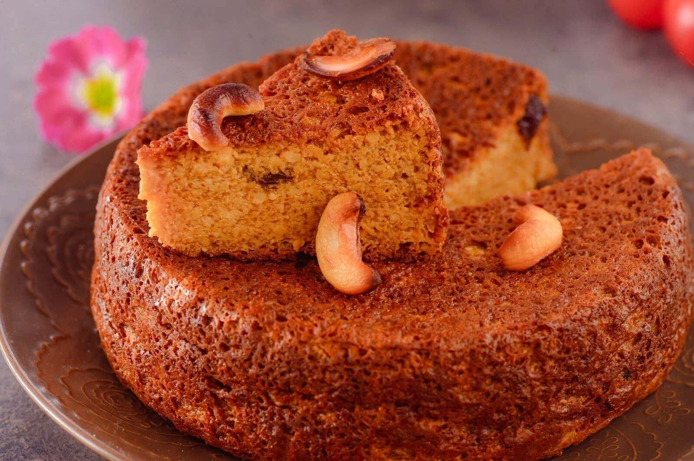

Chhena Poda
Chhena Poda is a traditional Odia dessert made from fresh chhena (cottage cheese), sugar, and flavored with cardamom, baked until it has a caramelized crust. It's a must-try for sweet lovers!
Time: 1 hour (plus cooling)
Protein:
- Chhena (1 cup) provides around 28g of protein.
Recipe Details
Ingredients
Steps to Make Chhena Poda:
Listen to the instructions here:
- Prepare the Chenna: Boil milk and curdle it using lemon juice or vinegar. Once it curdles, strain the curds in a muslin cloth and rinse with cold water to remove the sourness. Squeeze out excess water and allow the chenna to sit for about 30 minutes.
- Mix Ingredients: In a large mixing bowl, crumble the chenna well. Add sugar, semolina, cardamom powder, and baking powder. Mix thoroughly until combined. If using, roast cashews and raisins in a little ghee and add them to the mixture.
- Prepare the Baking Dish: Preheat your oven to 180°C (350°F). Grease a round or square baking dish with ghee.
- Bake: Pour the chenna mixture into the greased baking dish and smooth the top. Drizzle a little ghee on top for added flavor. Bake in the preheated oven for about 30-35 minutes or until the top is golden brown and a toothpick inserted comes out clean.
- Cool and Serve: Once baked, remove from the oven and allow it to cool for a few minutes. Cut into pieces and serve warm or at room temperature.